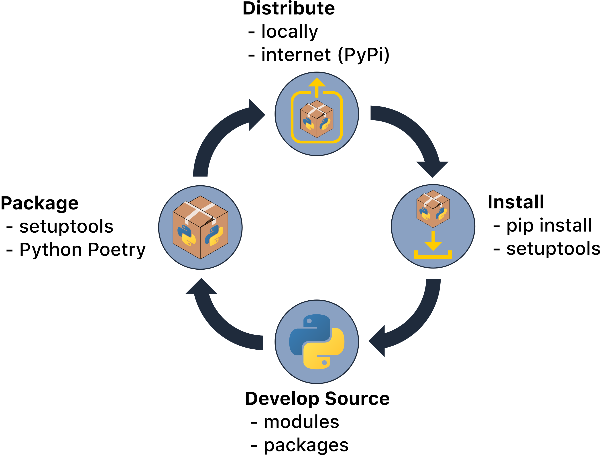
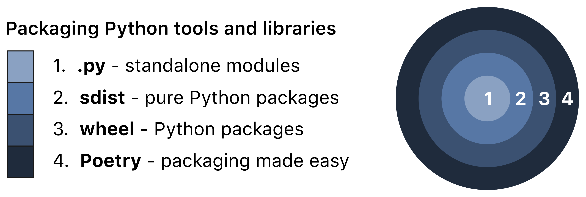

3 Package structure and state
The previous chapter demonstrated how to develop a Python package from scratch with the help of Python poetry. This chapter now takes a more in-depth look at packaging in Python. Often, developers don’t think about packaging until their code is actually written - but we’ll learn that thinking about packaging before even writing any code is very useful! This chapter is a somewhat Pythonified version of the Package Structure and State chapter of the R Packages book written by Jenny Bryan and also draws on information from the Python Packaging Authority.
3.1 Package states
By “package” here we mean the code that you wish to bundle up and distribute. In Python, your package can be in several different states depending on its complexity, target audience, and stage of development. The ones we’ll talk about here are:
- modules
- packages
- source distributions
- binary distributions
- installed packages
- in-memory packages
You’ve already seen some of the commands that put packages into these various states. For example, poetry build at the CL or import in a Python session. In the following sections, we’ll be giving those operations some context.

The Python packaging workflow.
3.2 Modules
A module is any Python .py file which may consist of Python functions, classes, variables, and/or runnable code. Modules can be useful for sharing simple Python code amongst compatible Python versions. A module that relies only on the standard Python library can easily be distributed and used by others (on the appropriate version of Python). In this way, a single module can be thought of as a package. For example, consider a module simple_math.py that contains the functions list_range and odd_even:
def list_range(x):
return max(x) - min(x)
def odd_even(x):
if x % 2:
print('x is odd.')
else:
print('x is even.')If the module simple_math.py is in your working directory then you can import the module using:
import simple_math # imports the entire module. Functions can then be accessed via dot notation, e.g., simple_math.list_range()
from simple_math import list_range # import only list_range function
from simple_math import odd_even # import only odd_even function
from simple_math import * # import all functionsBecause modules are single files they can easily be shared to others by e.g., email, GitHub, Slack, etc. Another user would simply place the module in their working directory to use it. However, this method of distribution does not scale well in cases of multiple files, if your code depends on additional libraries, or needs a specific version of Python.
3.3 Python packages
Projects consisting of multiple Python .py files (i.e., modules) are, by their nature, harder to distribute. If your project consists of multiple files, it is typical to organise it into a directory structure. Any directory containing Python files can comprise a Python “package”.
While we’ve been using the term “package” generically so far, it does have a specific meaning in Python and it’s important to make clear the distinction between “modules” and “packages”. As described in the previous section, any Python .py file is a module. In contrast, a package is a directory containing module(s) and/or additional package(s) (sometimes called “nested packages” or “subpackages”) along with an __init__.py file. An __init__.py file is required to make Python treat a directory as a package (as opposed to it simply being a plain-old directory of Python files); in the simplest case __init__.py is an empty file, but it can also execute initialization code for the package upon import (read more here). Packages allow us to organise our Python code and intuitively access it using “dotted module names”. Consider having the following two packages in your working directory:
A package containing modules:
pkg1
├── __init__.py
├── simple_math.py
└── advanced_math.pyA package containing nested packages:
pkg2
├── __init__.py
├── simple
│ ├── __init__.py
│ └── simple_math.py
├── advanced
├── __init__.py
└── advanced_math.pyModules can be accessed using dot notation. For example:
from pkg1 import simple_math # import simple_math module from pkg1
from pkg2.simple import simple_math # import simple_math module from pkg2It would be possible to share a package by transferring all the files that comprise the package (keeping the directory structure intact) to another user, who could then use the package if it were placed in their working directory. However, just like single modules, this method of distribution does not scale well, makes it hard to support or update your code, and won’t work if your code depends on additional libraries, or needs a specific version of Python. We need a more efficient and reliable way to package and distribute our code which leads us to “source distribution packages” and “binary distribution packages” which are described below.
3.4 Source distribution packages
A “distribution package” (often referred to simply as a “distribution”) is a single archive of the Python packages, modules and other files that make up your project. Having a single archive makes it easier to distribute your code to the wild. The base distribution format is called a “source distribution” (sdist). An sdist is a compressed archive (e.g., .tar.gz or .zip) of your package. Essentially, an sdist provides all of the metadata and source files needed for building and installing your code. You can read more about source distributions here. The standard tool in Python for creating sdists (and binary distributions, which we’ll explore in the next section) is setuptools.
Note that, as we saw in The Whole Game chapter we prefer to use Poetry (as a simpler and more intuitive alternative to
setuptools) to create distribution packages of our Python code. We’ll discuss Poetry in the later section Poetry and pyproject.toml.
As a very simple example, consider the following directory which now contains a setup.py file. The setup.py file is a standard file that helps setuptools build your sdist and it is described in detail here.
root
├── pkg1
│ ├── __init__.py
│ ├── simple_math.py
│ └── advanced_math.py
└── setup.pyYour sdist can then be built by changing to the root directory and running the following command:
$ python setup.py sdistThis will create an archive file (.tar.gz by default) of your project which is your sdist. If your code is pure Python then an sdist is a perfectly acceptable way to distribute your code, and a user could install it using:
$ python setup.py installYou could also share your sdist to PyPI from which a user could install it using pip install. It’s important to note that installing a package actually adds the package to your default installation directory (more on that in section Installed packages) such that it is accessible outside of your working directory - this is a key difference to simply sharing code as a module or package as we explored in the last two sections. We recommend consulting the The Hitchhiker’s Guide to Packaging and the Python docs for more information on creating and distributing source distributions. Some notable examples of Python sdists include: Django, hyperlink, requests.
However, if your code relies on any non-Python code/libraries/packages, a binary distribution, described in the next section, is a much better way to package and distribute your code. In fact, binary distributions are always preferred by Python’s installer pip and so are typically recommended even for pure-Python packages.
3.5 Binary distribution packages
Binary distributions are a type of distribution that contains compiled extensions. One of the most powerful features of Python is its ability to interoperate with libraries written in other languages, for example, C, Fortran, etc. Not all end-users will have the tools, experience, or time to build packages containing extensions written in these other languages, so binary distributions are how you make life as easy as possible for installers of your code. Like a source distribution, a binary distribution is a single artefact. However, binary distributions are “pre-built” meaning that, unlike source distributions, they do not require a build step before installation. The main binary distribution format used by Python is called a wheel (more on that later). Python’s package installer, pip, prefers wheels because installation is always faster than building and installing from an sdist (even if your sdist is pure Python it still involves a build step to build out the metadata from the setup.py file).
As an example, much of the commonly used Python library NumPy is implemented as C extensions. The existence of wheels means that a user can, for example, simply run pip install numpy to install NumPy from PyPi, as opposed to having to build it from source with the help of a C compiler, amongst other requirements. If you’re feeling particularly masochistic you can try to build NumPy from source following these instructions from the NumPy docs.
Binary distributions are platform specific (i.e., Windows, Mac, Linux). As a result, binary distributions are usually provided with their corresponding source distributions; if you don’t upload wheels of your code for every operating system, end-users will still be able to build it from source. Take a look at the downloadable file list of NumPy on PyPi - you’ll see wheels for most common platforms, as well as the source distribution at the bottom of the list. Wheels actually come in three flavours (which you can read more about here):
- Universal wheels: pure Python and support Python 2 and 3. Can be installed anywhere using
pip. - Pure Python wheels: pure Python but don’t support both Python 2 and 3
- Platform wheels: binary packages specific to certain platforms as a result of containing compiled extensions.
You can actually tell a lot about a wheel from the name itself which follows a strict naming convention: {distribution}-{version}(-{build tag})?-{python tag}-{abi tag}-{platform tag}.whl.. For example, the NumPy wheel numpy-1.18.1-cp37-cp37m-macosx_10_9_x86_64.whl tells us that:
- The distribution is
NumPy v1.18.1; - It is made for Python 3.7;
- It is specific to the
macosx_10_9_x86_64platform (i.e, this is a “platform wheel” because it is platform-specific).
Building wheels is similar to building source distributions with setuptools. Once your setup.py and related files are ready. We recommend taking a look at the Python Packaging User Guide tutorial if you’re interested in using setuptools to properly build the sdist and wheel of your project.
3.6 Poetry and pyproject.toml
The previous sections gave a high level overview of Python’s standard packaging options and tools. However, in The Whole Game Chapter we used Poetry to create a toy Python package - so where does this fit into the Python packaging landscape? Well, in the previous sections on Source distribution packages and Binary distribution packages, we really only touched the tip of the iceberg of Python packaging. When creating a package there’s a lot of customisation to think about with your setup.py file, and a host of other files we didn’t even talk about (e.g., requirements.txt, setup.cfg)! Needless to say, packaging in Python can be hard to understand, especially for beginners. These words echo the sentiments of Poetry’s creator Sébastien Eustace and the motivation for creating the tool:
“Packaging systems and dependency management in Python are rather convoluted and hard to understand for newcomers. Even for seasoned developers it might be cumbersome at times to create all files needed in a Python project: setup.py, requirements.txt, setup.cfg, MANIFEST.in, and the newly added Pipfile. So I wanted a tool that would limit everything to a single configuration file to do: dependency management, packaging and publishing.”
That “single configuration file” is pyproject.toml (you can read more about .toml files here). Essentially, Poetry is based on all the concepts of sdists and wheels discussed previously - it just simplifies and streamlines the whole packaging process in an intuitive way. In fact, the poetry build command you’ve seen previously, actually creates the sdist and wheel distributions of your package for you (depending on how you’ve configured your project).

Python packaging gamut. Modified after The Packaging Gradient by Mahmoud Hashemi.
3.7 Installed packages
An installed package is a distribution that’s been decompressed, built (in the case of an sdist) and then copied to your chosen installation directory. The default “chosen installation directory” varies by platform and by how you built/installed Python. For example, I installed Python using the miniconda distribution and my default directory for package installation is /Users/tbeuzen/miniconda3/lib/python3.7/site-packages.
“Installing” a distribution (e.g., by pip install XXX) is really a two-step process: 1) building the package, and 2) installing the package. Using wheels takes out the first step, meaning we only need to install. The install step is simple, all it has to do is copy all the decompressed files to the appropriate directory. In fact, we can manually install a package if we want to by manually decompressing a wheel and copying the files to their appropriate locations - there’s no real reason to do this because it’s far more effort than using a single one-liner at the CL, it does not resolve dependencies so could break your installation, and probably has other unwanted side-effects. However, it’s a nice way to learn about the package installation process, so if you’d like to give it a go, you can try the following steps (which assume you’re using MacOS and the conda package manager):
- Create a new virtual environment to act as a safe, test playground. As a
condauser, the CL command for me to create a new empty virtual environment called “manualpkg” and including Python 3.7 isconda create -name manpkg python=3.7. Be sure to activate the environment once it has been created (i.e.,conda activate manualpkg); - You can find a toy
wheelto download in the GitHub repository of this book here (although you can try this manual installation procedure with awheeldownloaded from any source, e.g., PyPi). Download thewheelinto thesite-packagesdirectory of themanualpkgenvironment, which for me was located at/Users/tbeuzen/miniconda3/envs/manualpkg/lib/python3.7/site-packages/; - From the CL,
cdto thesite-packagesdirectory of themanualpkgenvironment; - At this point, there is no
toy_pkgpackage installed for our virtual environment to access. So starting a Python session from the CL (python) and tryingimport toy_pkgwill fail because even though thewheelis there, we haven’t decompressed it yet; - From the CL we need to run
unzip toy_pkg-0.0.1-py3-none-any.whl; - You’ll now find two fresh directories:
toy_pkgandtoy_pkg-0.0.1.dist-info; - From the CL start a Python session by typing
pythonand try the following:
3.8 Imported Packages
We now arrive at our last package state, the “imported package”. This state is associated with a command that is familiar to everyone that uses Python:
You can read about the import system in detail in the Python documentation. Briefly, the import statement comprises two operations:
- it searches for the named module; and,
- then binds the results of that search to a name in the local namespace.
Note that for efficiency, each module is only imported once per interpreter session. If you modify your module, you can’t just re-run your import statement (as that name in the namespace is already populated and won’t be re-loaded). Instead, you have to restart your interpreter or force the import using importlib.reload(), but this is inefficient when working with multiple modules.
3.9 Packaging Python Applications
In this chapter we’ve only talked about packaging and distributing reusable Python code, a process which is really aimed at developers and audiences familiar with Python. While it’s outside the scope of this book, it’s also possible to package and distribute entire Python applications, that is, software that is not meant to be developed on but rather to use. Some good exmaples of Python-based applications are Sublime Text, EVE online, and Reddit. There are a lot of options available for packaging and distributing Python applications and we recommend watching the excellent talk by Mahmoud Hashemi “The Packaging Gradient” to learn more. To give you an idea of the available options, the figure below shows a summary of the different options discussed by Mahmoud for packaging Python applications.

Python application packaging gamut. Modified after The Packaging Gradient by Mahmoud Hashemi.